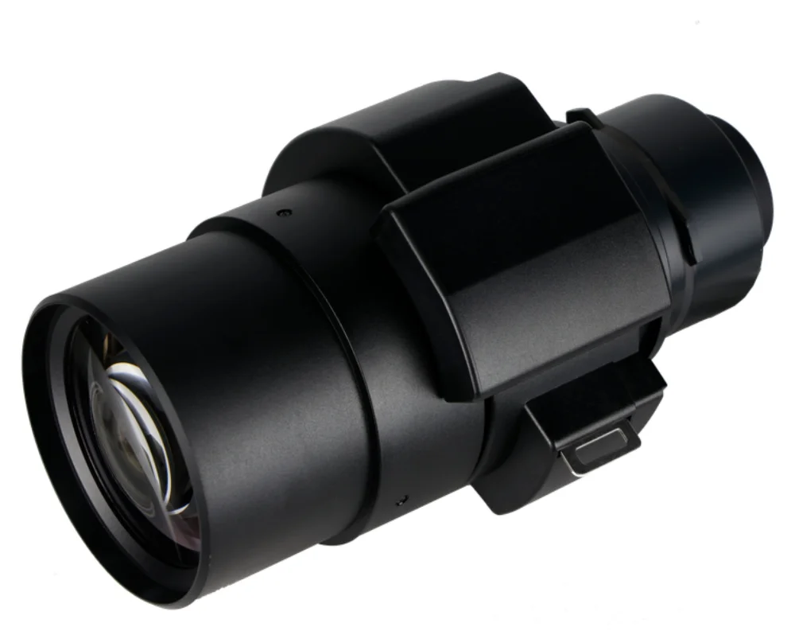

本体は対応している?
プロジェクターの正確な型式から適合を確認します。
プロジェクター ↗EQUIPMENT
長焦点ズームレンズ
客席のずっと後ろから、狙った大きさで映す。
KEY SPECIFICATIONS

画像を大きく見る ＋01 / ROLE & FLOW
実際の構成は案件に合わせて決めます。
02 / BEFORE YOUR BRIEF
プロジェクターの正確な型式から適合を確認します。
レンズ前端からスクリーンまでの距離と画面幅を共有してください。
16:10・16:9など、使う縦横比の距離表で照合します。
03 / CHOOSING THE RIGHT TOOL
ホールの後方や調整室の近くなど、スクリーンから離れた位置にプロジェクターを置く場合の選択肢です。
ET-C1S600(1.36–2.10:1)より遠く、ET-C1T800(3.30–6.60:1)より近い距離をカバーします。投写位置と画面幅から選び分けます。レンズ単体では投写できません。すべての Panasonic 製プロジェクターに付くレンズではありません。
投写比は投写距離と画面幅の関係を表しますが、設置位置は画面サイズ・縦横比に対応するメーカーの距離表や計算式で確認します。距離の基準はレンズ前端からスクリーンまでです。投写距離と、投写光から人を離すための安全距離は別の条件です。
出典：Panasonic Connect 公式 C1 シリーズ仕様 ↗（2026年11月10日照合）
日程・台数、設置場所と搬入経路、電源、担当範囲をお聞かせください。本体・周辺機材・搬入出・設営・本番操作・撤去を分けて、必要な範囲を整理します。